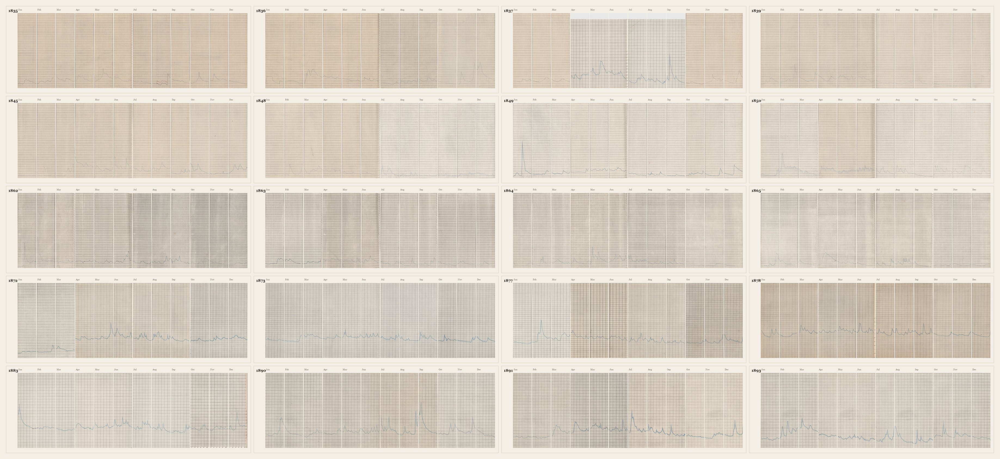
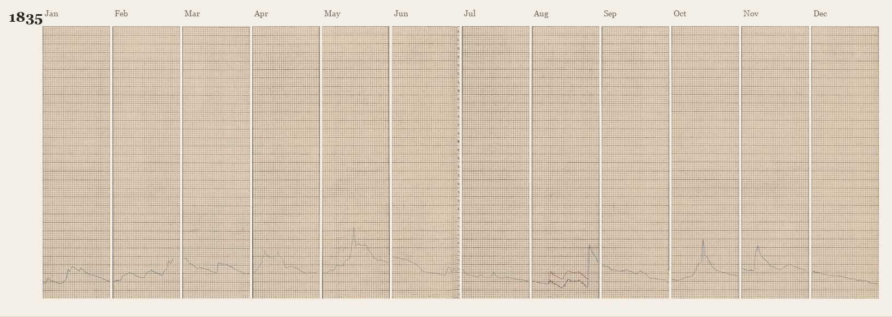

Supported
Browsing and pattern inspection
The images are faithful derivatives of archival scans. Visual comparison, month-to-month reading, and review workflows are supported.
Historical hydrology · image corpus
Monthly gauge charts from Ulm and Neu-Ulm, 1835–1893. Browse the long-run pattern, query the record, and separate what the images can prove from what they cannot.
Critical distinction
This is an image corpus, not a numeric time series.
The curves are authentic, but the tiles carry no units, gauge datum, station coordinates, or extracted values. Use them to study patterns and chart-understanding methods; do not report centimetres from a tile.
Coverage
Pattern preview

Each panel is one included year, January–December, arranged four across. Gaps between years, the station change, and the pasted 1837 sheet remain visible as breaks in visual consistency.
Next actions
Linked images
One strip contains all 240 months in sequence. The matrix below keeps the calendar visible, so gaps and station changes remain legible.
1835 → 1893
Scroll horizontally. Each month is one chart column; year boundaries are marked.
Calendar matrix
Colour of the cell border: green = metadata linked; amber = image only; red = detection flag. Click any month to open its record.
Annual strips

Catalogue query
Ask the archive a question. Every filter is explicit, every result is traceable, and the export contains the same fields you see here.
Result set
| Year | Month | Station | Form | Metadata | Source | Completeness | Flags | Review |
|---|
No records match this query.
Selection audit
Critical assessment
A dataset can be authentic and still be unusable for a particular question. This page separates provenance, documentation, and scientific validity.
Supported
The images are faithful derivatives of archival scans. Visual comparison, month-to-month reading, and review workflows are supported.
Conditional
Usable as a chart-understanding corpus after a hand-traced gold set and per-era calibration. Faded ink and the pasted 1837 sheet are known traps.
Not supported
No units, datum, station geometry, or extracted values. The 1845 station break and 39 missing years also preclude naive long-term hydrology.
Use-case matrix
Integrity checks
Human review
Reviews are stored in this browser only, under ice-reviews-v1. Export before changing browser or machine.
Review queue
Validity statement
Provenance and method
A static, local-first browser built on top of the image corpus. No server, no database, no hidden model. The catalogue is the manifest.
Source
Holding institution: Bayerisches Hauptstaatsarchiv. The TIFF copyright tag names the archive as rights holder.
Series: Bayer. Landesamt für Wasserwirtschaft 21. The source plates are annual tables of water-level observations at Ulm and Neu-Ulm.
Scanning: i2S SupraScan Quartz A1, 300 dpi, 24-bit RGB, LZW TIFF, scanned 5 March 2025.
Tiling: month columns detected and deskewed from the annual sheets, cropped and normalised to 744 × 3000 JPEG. The first ten years carry metadata; later years are image-only in this folder.
Rights: no licence is included. Do not redistribute the images until permission is confirmed with the archive.
Data contract
yearCalendar year of the month column.monthMonth number, 1–12.stationUlm through June 1845; Neu-Ulm from July 1845.station_sourcemetadata or inferred.formChart/paper era. unclassified after 1863.source_scanArchive scan ID, linked only for 1835–1863.doc_score0–100 documentation completeness, not scientific accuracy.blue_pctConservative blue-ink pixel share; low values flag faded ink.red_pxRed-ink pixel count; substantial only in August 1835.grid_x, grid_yDetected ruling spacing in pixels.doc_gapsMissing metadata, unlinked source, inferred station, unclassified form.tech_flagsDuplicate, detection, faint ink, red ink, dimensions, pasted sheet.Limits
01. A tile is a picture of a chart, not a measurement. The ink has shape, but no units.
02. The station changes in 1845 and the record has 39 missing years. Continuity is an assumption, not a fact.
03. The red series in August 1835 is unexplained. Do not call it ice without archival evidence.
Record